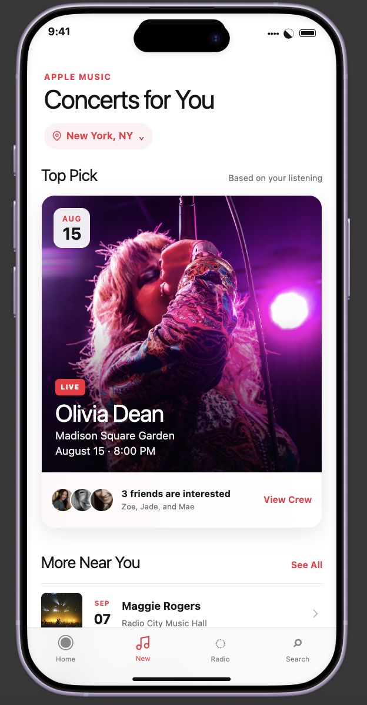
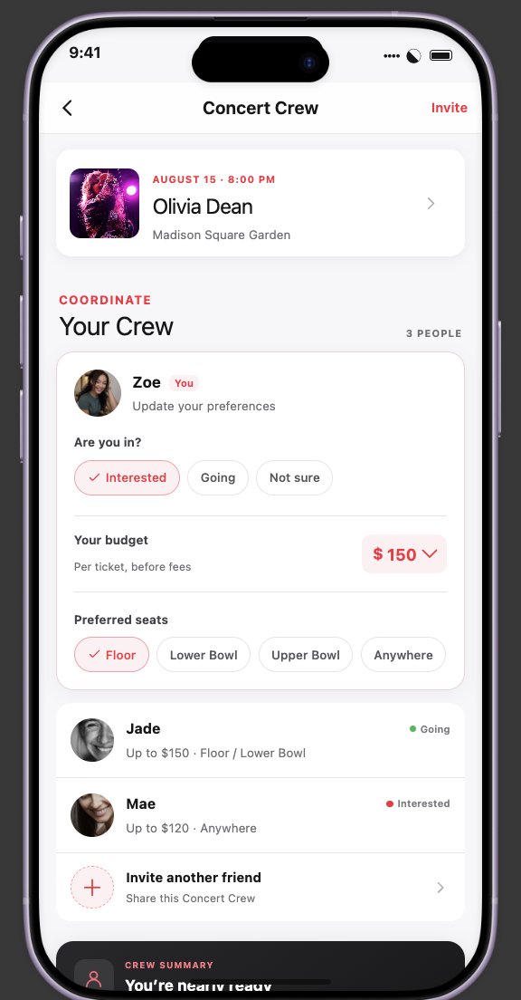
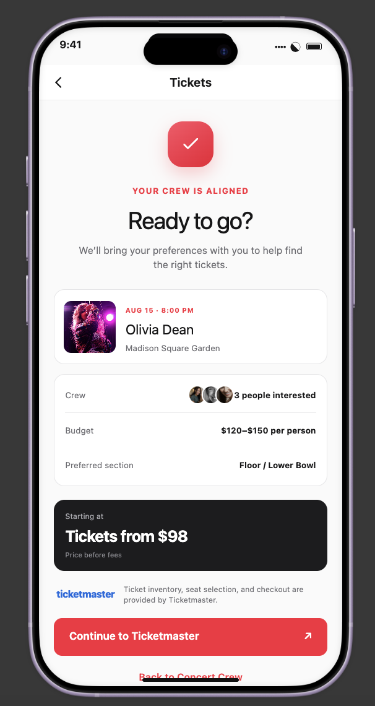
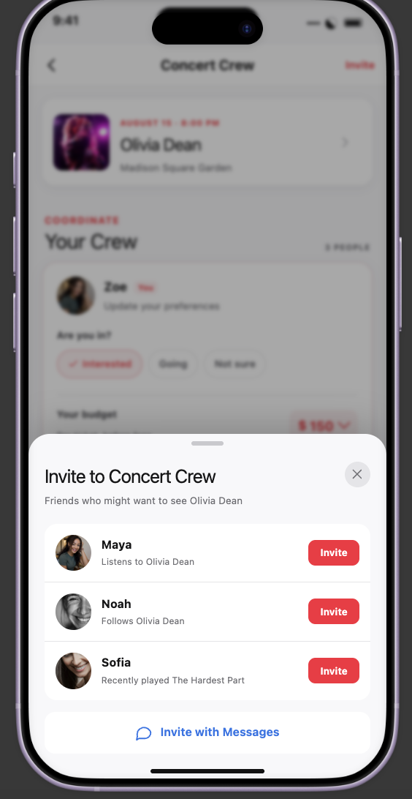

02 · Product Concept
Apple Music —
Concert Crew
A social planning concept that extends concert discovery into the moment friends decide whether—and how—to go together.
Independent concept project. Not affiliated with Apple or Ticketmaster.
- ROLE
- Product Designer
- FORMAT
- Independent concept
- FOCUS
- Social planning + interaction
- PROTOTYPE
- Figma Make
to an actual plan.



Discovery isn't the hard part.
Apple Music can already surface concerts and connect listeners to ticketing. The messier part often starts after someone finds a show they want to attend.
For friends, the decision quickly spreads across texts, screenshots, ticket links, budget conversations, and repeated questions about who is actually in. I focused the concept on that coordination gap rather than redesigning concert discovery itself.
HOW MIGHT WE Help listeners turn shared interest in an artist into an actual plan to attend a concert together?
Narrowing the idea made it stronger.
The first version of this exploration was broader: a Spotify × Ticketmaster concept centered on concert discovery, planning, and ticketing. After comparing that idea against what music platforms already support, I realized discovery was not the most differentiated problem.
I reframed the project around the social moment between finding a concert and buying a ticket. Moving the concept into Apple Music also gave the experience a clearer ecosystem: concert discovery can stay inside Music, communication can connect to Messages, and ticket checkout can remain with Ticketmaster.
Four moments, one shared plan.
The experience starts inside familiar concert discovery, then progressively adds social context only when it helps the user make a decision.
The existing concert-discovery moment gains one small social signal: friends are interested too. The feature enters quietly instead of taking over the page.
Each person can communicate whether they're in, what they can spend, and where they'd prefer to sit. A crew summary turns separate preferences into a shared picture.

Suggested friends have a visible connection to the artist, while Messages remains available for people outside the immediate Apple Music social graph.
The group can see its budget and preferred section one last time before continuing to Ticketmaster, keeping Apple Music focused on coordination rather than checkout.
Built to test the flow, not just the screens.
I built the concept in Figma Make so I could evaluate the sequence as an interaction: entering from concert discovery, changing attendance and preferences, inviting a friend, seeing the crew summary update, and moving toward tickets.
AI-assisted prototyping made it faster to get a working flow on screen. The product decisions still required judgment—especially deciding what information belonged in Concert Crew, what should stay in Messages, and where Apple Music should hand responsibility back to Ticketmaster.
DISCOVER → CREW UP → COORDINATE → GO
Designed in Figma Make as a navigable product concept rather than a collection of isolated mockups.
What changed my thinking
The strongest iteration was not a new screen. It was narrowing the problem.
The original concept tried to improve too much of the concert journey at once. Reframing it around coordination gave every interaction a clearer job and made Concert Crew the actual contribution rather than another concert feed.
If I continued the project, I would test which planning preferences matter most to real concertgoers, whether people are comfortable exposing concert interest to friends, how much coordination belongs inside Music versus Messages, and when a group feels “ready” enough to move into ticket selection.